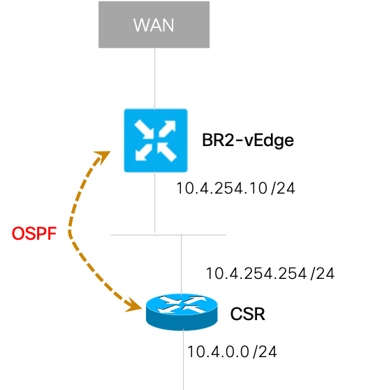
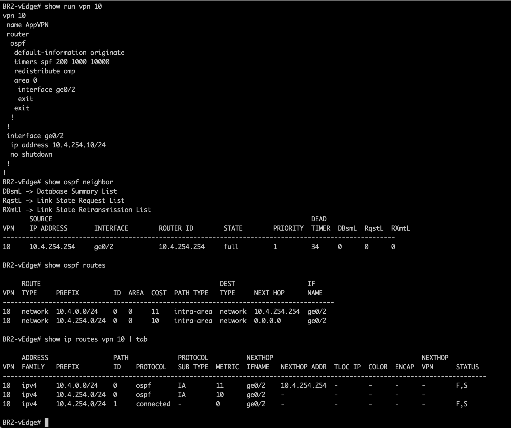
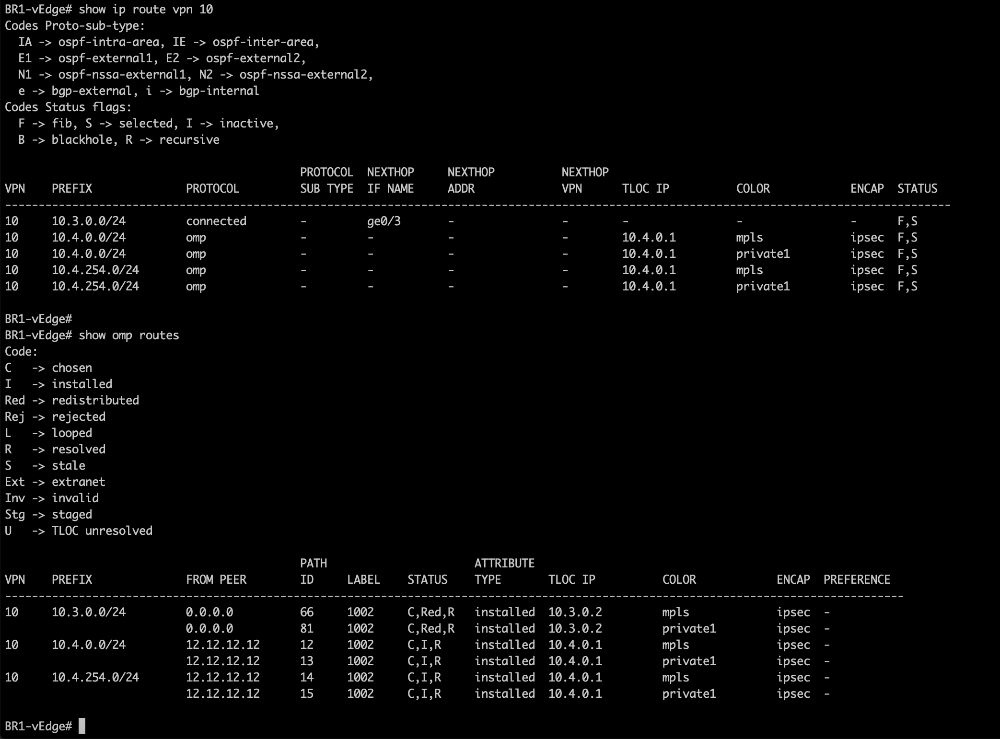
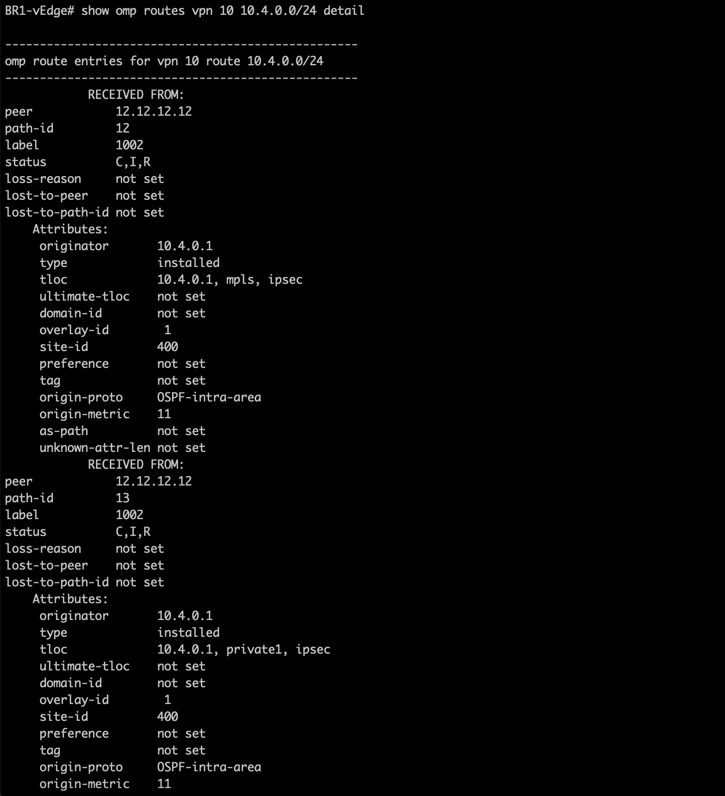

Task6 OSPF service old
This Task will walk through the steps to perform OSPF peering of the vEdge in Branch 2 on the LAN. The traffic on the LAN is referred to as Service Side on vEdge. The OSPF peering will be done for VPN 10 in this exercise. VPN 10 already exists in BR1 and BR2.
Cisco CSRv exists on the LAN side of BR2 and this CSRv has already been configured with appropriate configurations for OSPF peering.
SDWAN Lab Topology
The logical topology of this branch is shown in below figure:

Pre-requisite:
SDWAN controllers and vEdges (in Branches & DC) must be fully operational. If those are not installed (or not operational) then please complete the previous Tasks first.
Step 1: Adding OSPF config in BR2
In this step we will configure OSPF area 0 configurations on the vEdge and also validate that the configurations are applied properly.
- Log on to the vManage from a web browser (if not already open) and use credentials of
adminandadmin:
https://198.18.1.10
| Note: |
|---|
If admin/admin credentials do not work then you may try using cisco/cisco or cisco1/cisco1 |
-
On the vManage GUI, navigate to Configuration > Templates > Device.
-
We will make a copy of the existing CLI Template and edit the new Template to add OSPF configurations. Click on the three dots
...on right-side of "CL-BR2-vEdge1" > Copy. Next:- Name the new template as
CL-BR2-vEdge1-ospf - You may modify description to state:
Branch2 vEdge1 configs with ospf
- Name the new template as
-
Then Select the newly CLI template named "CL-BR2-vedge-ospf". And, Click on the three dots
...on right-side of "CL-BR2-vedge-ospf" and SelectEditfrom the drop-down menu. -
Edit option will allow you to add additional configurations in this template as per below:
- Scroll all the way to the end of existing template,
- Then you can add (copy & paste) the below configuration at the end of the exiting template,
- Note: Do not make any other changes to existing configurations in this template
vpn 10
router
ospf
default-information originate
redistribute omp
area 0
interface ge0/2
exit
exit
| Note: |
|---|
| Above configs perform OSPF configuration as well as redistribution of OMP routes into OSPF with "redistribute omp" command |
-
Click Update to save the new configurations in the template.
-
Now Attach this new template (named: "CL-BR2-vEdge1-ospf") to
BR2-vEdgeby:- Click on the three dots
...on right-side of "CL-BR2-vEdge1" - Select Attach Devices from dropdown menu
- Click on the three dots
-
Then on next screen,
- Select
BR2-vEdgewith System IP of10.4.0.1in the Available devices - Click the
Right Arrow. At this point BR2-vEdge will move to the Selected Devices - then Click on Attach
- Select
-
On the subsequent screen, Click the
Nextbutton -
On the next screen, Click on
BR2-vEdgeon left section and Click onConfig PreviewandConfig Diffoptions on the right side of window to confirm correct configurations are pushed to this BR2-vEdge.
| Important Note: |
|---|
| Be very careful in making configuration changes on vEdge. Do NOT change any configuration of VPN 512 as it can result in loss of connectivity to the vEdge - which can not be restored. You will have to start the lab again from Task #1 if you loose network connectivity to a vEdge. |
- Next Click on the
Configure Devicesbutton on bottom of the screen. On the subsequent screen verify that the template is attached successfully to BR2-vEdge
Step 2: Validate OSPF in BR2
Now lets confirm the OSPF configurations are pushed to vEdge and routes are learned from the OSPF neighbor.
-
You may access BR2-vEdge by direct SSH using the Mputty client and initiate SSH to BR2-vEdge with IP address of 198.18.134.106 . Or you may access it the main menu of vManage GUI by navigating to Tools > SSH Terminal. Make sure Device Group states All and
- Click on the BR2-vEdge.
- Log into vEdge by using credentials:
- Login name:
admin - Password:
admin
- Login name:
Note: If admin/admincredentials do not work then you may try usingcisco/ciscoorcisco1/cisco1 -
Next, execute the below commands to verify that OSPF configuration on the vEdge-1 in Branch-1:
show run vpn 10
show ospf neighbor
show ospf routes
show ip routes vpn 10
Below screenshot shows the output of of above commands on BR2-vEdge:

From the output of above commands, confirm that vEdge-1 in Branch #1 shows that:
- OSPF configurations under VPN 10 exist on the vEdge,
- OSPF neighbor with the 10.4.254.254 exists,
- below OSPF routes are learned from this neighbor:
- prefix: 10.4.0.0/24
- prefix: 10.4.254.0/24
- these OSPF routes are installed in the routing table.
Step 3: Verify OSPF routes redistribution
In the previous step, we configured the OSPF peering between BR2-vEdge and a neigbouring router on the LAN of this Branch2.
Now lets confirm that OSPF routes (learned on BR2) are redistributed via OMP towards BR1.
-
Using Mputty client on remote desktop, initiate a SSH session to BR1-vEdge (with IP address of 198.18.134.105).
-
Execute below commands on BR1-vEdge to verify that OSPF routes are learned from BR2:
show ip routes vpn 10
show omp routes
Below screenshot shows the output of of above commands on BR1-vEdge:

From the output of above commands, verify that OSPF routes of 10.4.0.0 has been redistributed via OMP by BR2-vEdge
- On BR1-vEdge, we can get more details (attributes learned via OMP) about the routes by using below command:
show omp routes vpn 10 10.4.0.0/24 detail
Below screenshot shows the output of of above commands on BR1-vEdge:

From the output of above command you can verify the attributes for 10.4.0.0/24 route such as:
origin-protoisOSPF-intra-area(so route is originated by OSPF)-
tlocentries show:system IPof10.4.0.1,colorofmpls&private1. This means that the route is learned over both WAN links (identified by color).
-
In contrast you may run below command to see the
origin-protofor route10.4.254.0:
show omp routes vpn 10 10.4.254.0/24 detail
Does the above output 10.4.254.0 makes sense?
It basically shows that the route was directly connected on BR2!
You have successfully finished this task of configuring OSPF on Service side of a branch